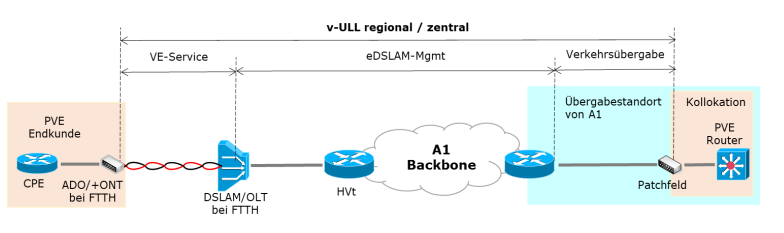

🔒 Routerzwang bei Magenta - Warum bekomme ich 2025 noch eine Fritzbox von 2018? 🔒
CWR
Hallo zusammen,
nachdem wir anders als in Deutschland leider noch immer den Routerzwang bei Magenta haben (hoffentlich klagt auch hier mal der VKI, es ist völlig jenseitig, was hier passiert) - wie lang gedenkt Magenta eigentlich, den Kunden veralteter Hardware aufzuzwingen?
In meinem Fall ist es die AVM FRITZ!Box 7530, inzwischen über 6 Jahre alt und völlig veraltet wenn man sie mit den aktuellen Geräten vergleicht, die bereits WiFi6 bzw. seit heuer WiFi7 vorweisen können. Das man eine Gerätegeneration "verschläft" ist ja okay. Man kann nicht alle 2 Jahre das Modem tauschen. Aber inzwischen fühle ich mich als Kunde bei Magenta einfach nur noch veräppelt. Es sind mittlerweile seit Sommer Fritzboxen mit WiFi 7 am Markt, und ich rödle hier zu Hause mit dem alten Mist herum.
Wäre schön, wenn sich hier endlich mal etwas tun würde. Es ist nämlich schon lächerlich - ich darf mir keine "größere" Fritzbox kaufen, das verbietet mir Magenta. Gleichzeitg tauscht man das Modem außer bei Defekt nie mehr aus. Ich glaube, ich suche mir einen Betreiber ohne dämlichen Routerzwang...
Soweit ich informiert bin, kannst du das Magenta Modem problemlos in den Bridge Mode versetzen und dahinter einen aktuellen Router (müsstest du kaufen) anschließen, der all deine Bedürfnisse erfüllt
😊
. Mir sind aktuell auch keine Neuigkeiten bekannt, dass Magenta demnächst neuere Fritz!Box-Modelle herausgeben wird
📡
.
Soweit mir bekannt ist, hat Magenta.AT keine eigene Infrastruktur auf DSL-Basis, sondern nutzt diese vom Mitbewerber A1.
Magenta.AT dürfte sich da wohl nur einmieten, um diese mit Ihrem Modem/Router (FritzBox) Konfigurationen auch das Internet nutzbar machen zu können.
Allerdings kann man auch schon eigene Modem/Router (FritzBoxen) nutzen, die allerdings die Bezeichnung "
DACH, oder International
" haben sollten.
Bei diesen lassen sich in den Einstellungen die Konfiguration Daten des Jeweiligen Anbieters auswählen, und einrichten.
Wichtig dabei ist, dass man KEINE "
D
" Variante nimmt, da sich diese
nicht
hier im Alpenland konfigurieren und nutzen lassen, da diese auch einen anderen Anschluss (Stecker) haben.
IT-Freak
Es kommt immer darauf an, wie das Netz auf Provider Seite konfiguriert ist. Bei fonira z.B. kommt ein jedes Gerät online solange der Port geschaltet ist, da wird über DHCP eine CG NAT IP vergeben.
Bei Magenta kenn ich nur den Post von
@biznizläuft
zu dem Thema:
Wenn das noch aktuell ist, bekommt man
nicht so einfach
so gut wie garnicht ein eigenes Modem online.
Wenn das noch aktuell ist, bekommt man
nicht so einfach
so gut wie garnicht ein eigenes Modem online.
Das ist so nicht ganz korrekt, den beim Mitstreiter A1 kann man mittlerweile auch einen Privat-gekaufte Router/Modem (FritzBox) nutzen, der auch im Netz vom A1 funktioniert (eigene Erfahrung dazu).
Nur sollte diese FritzBox - welche Modelnummer auch immer - eine DACH oder Internationale Variante sein, da diese schon eine Vorkonfiguration der Heimischen Betreiber beinhalten.
Einfach den Netzbetreiber in den Einstellungen auswählen, den Rest wird vom Betreiber ergänzt.
PS: Mein Schwager nutzt das Internet von Magenta, aber das Equipment - Anschlusskabel und Modem/Router - kommt von A1, den auf dem Modem lacht einem das A1-Logo frech ins Gesicht.
Ich kann jetzt nicht mit Sicherheit beschreiben, ob Magenta AT nun auch eine Eigene Infrastruktur auf DSL-Basis aufweist, aber das glaube ich nicht da diese die Infrastruktur von A1 (Post) nutzen.
Magenta AT hat im Moment "nur" das Koaxialkabel/Glasfaser Netz als eigene Infrastruktur, und da kann man "leider" kein eigenes Kabelmodem anschließen.
Bearbeitet
von Maverick
IT-Freak
@Maverick
Ich habe nicht von A1 geschrieben, sonder von Magenta. Für Layer 1 stimmt es, da kommt die Verbindung online. Jedoch ging es darum, ob das Modem auch eine Internet Verbindung bekommt. A1 macht in dem Fall, sehr vereinfach dargestellt, das Kabel zwischen Kunde und Virtuellen Entbündler (Magenta). Bei der Variante wo sich Magenta halt einmietet und nicht selbst einen DSLAM oder ISAM betreibt.
Technisch ist es im Post von biznizläuft beschrieben, das ist die interpretierte Variante:
Was an dem "Kabel" auf Magenta Seite steckt, entscheidet Magenta und unter welchen Umständen dann an dem Kabel Internet ankommt. Da kann Magenta sehrwohl sehen, welche konkrete Box angeschlossen ist und ob es die vorgesehene Box ist. Mit dem von Satz im Zitat beziehe ich mich selbst auf das Zitat von biznizläuft. Er beschreibt da Systeme, die im Bereich von Magenta sind. Da greift der Vergleich mit A1 nicht.
In meinem Post ist es auch beschrieben, wie es der Anbieter fonira macht, der ebenso wie Magenta, bei Bedarf das DSL Netz von Magenta nutzt.
Wem gehört dieser Anschluss, wenn dieser nicht vom Mitstreiter A1 (Post) ist.
Magenta hat "noch" kein eigeständiges Equipment, damit diese eigenständig auf diesen Anschluss setzen können, und es mag sein das Diese jetzt auch Modem/Router (DSL) zur Verfügung stellen können, die für diesen Anschluss vorkonfiguriert sind
Tatsache ist dennoch wohl das Magenta den "Anschluss (ARU) Vom Mitstreiter nutzen muss, um den Magenta Internetservice (DSL) anbieten zu können.
An wen wendet man sich bei Störungen oder Unterbrechungen, und wer wird dies beheben?
Oder habe ich da was Falsches in den Hals bekommen?
Der Titel dieses Themas lautet doch: "
Wann tauscht Magenta endlich die Routerhardware aus?
"
Von wem Stammt oder kommt die Hardware bei Magenta für den DSL-Anschluss?
@Maverick
wenn man den Dienst über Magenta bucht, meldet man sich bei Magenta für die Störung.
Ich streite nicht ab, das A1 bei Magenta DSL über das A1 Netz etwas damit zu tun hat. Jedoch ist es nicht so, dass alles was bei A1 gilt auch bei Magenta gilt.
Dabei gibt es die Möglichkeit von A1 bereitgestellte Router zu nutzen oder eigene. Bei den eigenen entweder welche von der Whitelist oder andere welche die Anforderungen erfüllen. so macht es oja, die haben einige Modems zur Auswahl welche nicht in der Whitelist stehen:
https://oja.at/modems/
Auch die Modems von fonira waren nicht immer in der Whitelist.
Das ist die Netz Architektur aus dem Vertrag Virtuelle Entbündelung, Seite 23:

Alles auf Orange ist die Verantwortung von Magenta. PVE Router ist in dem Fall das Problem von Magenta und der kann z.b. die MAC Adresse des CPE, also dem Modem sehen.
Bezogen auf das Zitat von biznizläuft, der PVE Router bzw. dessen DHCP Server kann entscheiden, welcher MAC Adresse eine IP zugewiesen wird und welcher nicht. Die Technik kann auch die Automatische Modem Konfiguration übernehmen, solange genug Hinweise im Modem hinterlegt sind, um diese zu finden.
Danke dir für diese Klärung, den jetzt bin auch ich etwas schlauer als zuvor.
Eines wäre da noch, bei wem liegt die "Zuleitung " Verantwortung bis zur Dose, wenn Fehlfunktionen auftauchen, bei A1 oder Magenta?
Denn das dürfte der Knackpunkt sein.
Wie verhält es sich bei einem Modem/Router Tausch als Magenta Kunde falls erforderlich?
IT-Freak
Erster Ansprechpartner ist der PVE, also Magenta. Annahme, es geht um eine Virtuelle Entbündelte Leitung, sprich Diagramm wie am Bild oben. Je nach dem wie es beim Provider aufgebaut ist, kann der verschiedene Sachen messen. Wenn die Provider gut drauf sind, können die den Fehler gut einschätzen.
Modem Tausch ist für Provider potentiell billiger als bei A1 ein Ticket für eine Störung aufmachen. (Wenn's Modem nicht defekt ist, sind das vielleicht 40 Euro die in den Sand gesetzt wurden. 2x Porto, 1x Modem aufbereiten. Techniker Fehleinsatz ist schon deutlich teurer)
Wenn Magenta den Tausch anstößt, weiß ja Magenta, welches Modem per Post raus ging.
Der A1 Techniker kann das Magenta Modem nicht tauschen. Wenn Magenta das Modem von A1 mietet ist das natürlich anders. Das A1 Messgerät kann sich mit der Leitung verbinden, das geht nur bis zum DSLAM, der im Wirkungsbereich von A1 steht.
Bei echter Entbündelung mit einem Magenta ISAM, dann sieht es anders aus. Meine Einschätzung, Magenta würde dann einen eigenen Techniker schicken. Technisch gesehen würde da Magenta nur die Kupferkabel inkl. Telefondose bis zu einem Übergabe Punkt mieten. Aktive Technik ist dort dann rein Magenta.
Wobei A1 auch hin und wieder die Technik auf beiden Enden des Kabel abhängt und nur auf dem Kupfer misst. Z.B. bei Kabel Tausch.
Wenn Magenta den Tausch anstößt, weiß ja Magenta, welches Modem per Post raus ging.
Der A1 Techniker kann das Magenta Modem nicht tauschen.
Wenn Magenta das Modem von A1 mietet ist das natürlich anders.
Das A1 Messgerät kann sich mit der Leitung verbinden, das geht nur bis zum DSLAM, der im Wirkungsbereich von A1 steht.
Damit hast du mir - unter anderem in diesem Punkt - die Frage beantwortet.
Diese Frage war insofern spezifisch, da - wie ich erwähnte - mein Schwager einen Internet-Vertrag bei Magenta hat, aber von A1 das Equipment bereitgestellt wurde, da auf der FritzBox auch ein A1 logo prangert.
Bei den Anderen Antworten bin ich Technisch nicht so versiert, aber DANKE dir für die "Verständliche" Erklärung dazu damit dies auch ein Leie versteht.
Kurz und knapp: Modemtausch für DSL-Anschlüsse bei Magenta durchführen lassen - falls notwendig.
Soweit ich informiert bin, kannst du das Magenta Modem problemlos in den Bridge Mode versetzen und dahinter einen aktuellen Router (müsstest du kaufen) anschließen, der all deine Bedürfnisse erfüllt
😊
. Mir sind aktuell auch keine Neuigkeiten bekannt, dass Magenta demnächst neuere Fritz!Box-Modelle herausgeben wird
📡
.
Liebe Grüße, JD
🌻
...kein Mensch will durch x-Geräte durchschleifen, Bei Glasfaser ist es das Gleiche
😞
Warum kann der Kunde keine eigene
geeignete AVM Box direkt an das OTO hängen? Magenta hat das doch vor einem Jahr noch selber angeboten?
Hey, danke dir für dein ehrliches Feedback und deine offene Frage!
😊
💬
Ich kann total nachvollziehen, wie nervig es sein kann, wenn man sich erst durch mehrere Geräte „durchhangeln“ muss, obwohl man einfach nur schnell und unkompliziert ins Internet möchte. Dein Wunsch, direkt deine eigene AVM-Box (wie z.B. eine FRITZ!Box) am OTO ((Optical Termination Outlet) anzuschließen, ist wirklich verständlich – das würde vieles einfacher machen!
👍
✨
Wir wissen, dass viele unserer Kund:innen am liebsten ihre eigene Hardware nutzen. Genau deshalb arbeiten wir auch ständig daran, noch mehr Flexibilität zu ermöglichen.
Laut meinem Wissensstand ist es im Moment allerdings aus Gründen wie Netzstabilität, Sicherheit und optimalem Support nötig, dass unser augegebenes Modem zwischengeschaltet bleibt.
Dein Feedback ist super wertvoll für uns! Ich gebe es direkt an die zuständige Fachabteilung weiter, denn nur so können wir unseren Service noch besser machen. Vielen Dank, dass du dir die Zeit genommen hast, uns das mitzuteilen!
🙏
Wenn du noch Fragen hast oder Hilfe brauchst, melde dich jederzeit – wir sind immer für dich da!
🙂
Liebe Grüße und einen angenehmen Tag, JD.
🌻
toni7
@Jonathan Dorian
...vielen Dank für die nette Rückmeldung, gerade bei Glasfaser sind m.M.n. die technischen Geräte das i-Tüpfchen.
Das ein ISP diese nicht als Standard ausliefert ist auch nachvollziehbar, aber dem Kunden ein Gerät zu ermöglichen, auch wenn es nur
eine Type vom AVM ist, wäre Spitzenklasse.
Gerade bei den Latenzen ist der Router und der erste Hop das aller Wichtigste.
Also bitte schnellstmöglich Eure GF huawei Topologie fit machen
😉
Hey, danke dir für dein ehrliches Feedback und deine offene Frage!
😊
💬
Ich kann total nachvollziehen, wie nervig es sein kann, wenn man sich erst durch mehrere Geräte „durchhangeln“ muss, obwohl man einfach nur schnell und unkompliziert ins Internet möchte. Dein Wunsch, direkt deine eigene AVM-Box (wie z.B. eine FRITZ!Box) am OTO ((Optical Termination Outlet) anzuschließen, ist wirklich verständlich – das würde vieles einfacher machen!
👍
✨
Wir wissen, dass viele unserer Kund:innen am liebsten ihre eigene Hardware nutzen. Genau deshalb arbeiten wir auch ständig daran, noch mehr Flexibilität zu ermöglichen.
Laut meinem Wissensstand ist es im Moment allerdings aus Gründen wie Netzstabilität, Sicherheit und optimalem Support nötig, dass unser augegebenes Modem zwischengeschaltet bleibt.
Dein Feedback ist super wertvoll für uns! Ich gebe es direkt an die zuständige Fachabteilung weiter, denn nur so können wir unseren Service noch besser machen. Vielen Dank, dass du dir die Zeit genommen hast, uns das mitzuteilen!
🙏
Wenn du noch Fragen hast oder Hilfe brauchst, melde dich jederzeit – wir sind immer für dich da!
🙂
Liebe Grüße und einen angenehmen Tag, JD.
🌻
@Jonathan Dorian
...vielen Dank für die nette Rückmeldung, gerade bei Glasfaser sind m.M.n. die technischen Geräte das i-Tüpfchen.
Das ein ISP diese nicht als Standard ausliefert ist auch nachvollziehbar, aber dem Kunden ein Gerät zu ermöglichen, auch wenn es nur
eine Type vom AVM ist, wäre Spitzenklasse.
Gerade bei den Latenzen ist der Router und der erste Hop das aller Wichtigste.
Also bitte schnellstmöglich Eure GF huawei Topologie fit machen
😉
Punkto Support, wenn ein eigenes Gerät dranhängt, ist es auch wurscht, ob eine Magenta Box mehr dazwischen hängt. Der ONT erlaubt ziemlich viel auszulesen. Verbindungsqualität, Ethernet Geschwindigkeit und einiges mehr.
Beim Punkt Sicherheit, es ist wurscht, ob ein Gerät direkt dran hängt oder über eine Magenta Box im Bridge Mode, da wird sich nicht viel ändern.
{kind=link}